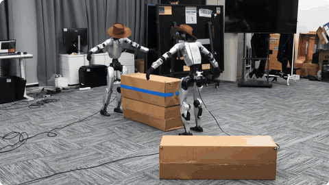

Pronounced roughly “jyah-nwoh tsow” (“tsow” rhymes with “cow”).
Hi, I am Jianuo Cao. I am an undergraduate student (Sep. 2023 - Present) majoring in Intelligence Science and Technology at Nanjing University, where I am fortunate to work closely with Prof. Lan-Zhe Guo and Prof. Jieqi Shi. I was also a Visiting Student Researcher at the MSC Lab in UC Berkeley, advised by Prof. Masayoshi Tomizuka.
I maintain the leading academic standing in my department (GPA: 94/100, Rank: 1/151) and am a recipient of the National Scholarship. Additionally, my work in mathematical modeling has been recognized with the MCM Finalist Award (Top 2% globally) and the CUMCM National First Prize.
My research aims to develop generalizable embodied intelligence, bridging high-level reasoning and robust physical interaction.
Whole-Body Control & Dexterous Manipulation: Reinforcement learning, motion generation, and contact-rich loco-manipulation.
Robot Foundation Models & Embodied Agents: Vision–language–action and behavior foundation models for generalist control, long-horizon planning, and adaptation through interaction.
[02/2026] One paper FormalML regarding formal subgoal completion was accepted by ICLR 2026!
[11/2025] Our research project on edge-deployable bimanual manipulation using VLA models winning the National Second Prize in the 2025 "Challenge Cup" Academic Competition!
[10/2025] One paper was accepted by the NeurIPS 2025 Math Workshop.
[06/2025] I will join the MSC Lab at UC Berkeley as a Visiting Student Researcher (VSR), working on humanoid whole-body control under the supervision of Prof. Masayoshi Tomizuka.
Academic Paper

TwoGether: Closed-Loop Planning and Control for Cooperative Humanoid Transportation Jianuo Cao,
Chen Fang*,
Tianyang Tang*,
Xuerong Liu,
Huayi Wang,
Jinrui Han,
Kaixuan Wang,
Peng Lu,
Ping Luo
Under Review for ICRA 2027